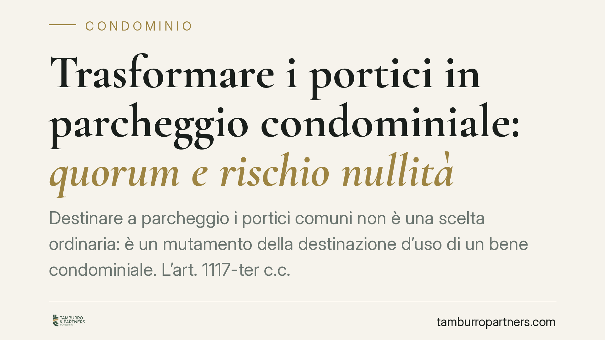

Trasformare i portici in parcheggio condominiale: quorum e rischio nullità
Destinare a parcheggio i portici comuni non è una scelta ordinaria: è un mutamento della destinazione d'uso di un bene condominiale. L'art. 1117-ter c.c. impone un quorum rafforzato e formalità di convocazione precise. Chi le trascura rischia una delibera nulla, con conseguenze ben più gravi della semplice annullabilità. Vediamo cosa prevede la norma e come muoversi.

Il caso: dal portico al posto auto
La domanda ricorre nelle assemblee: si possono trasformare i portici condominiali in posti auto per i condòmini? La risposta è affermativa, ma la strada passa per una regola precisa. Si tratta infatti di modificare la destinazione d'uso di una parte comune, operazione disciplinata dall'art. 1117-ter del codice civile, introdotto dalla riforma del condominio del 2012.
Il portico, di norma, assolve a una funzione di passaggio, riparo e decoro. Destinarlo alla sosta dei veicoli significa cambiarne la vocazione. È qui che scatta il regime speciale previsto dal legislatore.
Inquadramento normativo
L'art. 1117-ter c.c. consente all'assemblea di modificare la destinazione d'uso delle parti comuni "per soddisfare esigenze di interesse condominiale". Ma lo fa a condizioni stringenti.
Il primo comma richiede un quorum rafforzato: la delibera deve essere approvata con un numero di voti che rappresenti i quattro quinti dei partecipanti al condominio e i quattro quinti del valore dell'edificio (i millesimi). Non basta dunque la maggioranza qualificata ordinaria: occorre un consenso quasi unanime, su entrambi i parametri.
I commi secondo e terzo impongono formalità di convocazione specifiche. L'avviso di convocazione deve essere affisso, per non meno di trenta giorni consecutivi, nei locali di maggior uso comune o negli spazi a tale fine destinati. L'avviso deve inoltre indicare, a pena di nullità, le parti comuni oggetto della modifica e la nuova destinazione d'uso proposta.
Il punto decisivo è l'ultimo comma: "La convocazione dell'assemblea deve essere affissa [...]. La deliberazione [...] deve contenere, a pena di nullità, le indicazioni di cui al secondo comma". La sanzione prevista per il mancato rispetto dei requisiti di quorum e di convocazione è dunque la nullità della delibera, non la semplice annullabilità.
Nullità e annullabilità: perché la differenza conta
La distinzione non è formale. Una delibera annullabile (art. 1137 c.c.) può essere impugnata solo dai condòmini assenti, dissenzienti o astenuti, ed entro il termine perentorio di trenta giorni; decorso tale termine, il vizio si consolida e la decisione diventa inattaccabile.
La delibera nulla, invece, segue un regime del tutto diverso: può essere fatta valere da chiunque vi abbia interesse, senza il limite temporale dei trenta giorni. Chi confida nel decorso del termine per "sanare" una delibera assunta con quorum insufficiente o convocazione irregolare commette quindi un errore: quella delibera resta improduttiva di effetti e contestabile nel tempo.
È una scelta consapevole del legislatore: trattandosi di incidere stabilmente sulla destinazione di un bene comune, si è voluto presidiare la decisione con la sanzione più severa.
Mutamento di destinazione o innovazione?
Un chiarimento utile riguarda il confine con l'art. 1120 c.c., che disciplina le innovazioni (le opere che alterano la cosa comune o ne migliorano il godimento), approvabili con quorum inferiori.
La trasformazione del portico in parcheggio può comportare opere materiali, ma il suo nucleo è il cambio di funzione del bene: non si tratta solo di "migliorare" il portico, bensì di destinarlo a uno scopo diverso. Per questo il legislatore ha previsto una disciplina autonoma e un quorum più alto rispetto alle innovazioni ordinarie. Qualificare correttamente l'intervento è il primo passo: applicare il quorum dell'art. 1120 a un'operazione che ricade nell'art. 1117-ter espone la delibera alla nullità.
Implicazioni pratiche
Per il condominio e per l'amministratore ciò significa che l'iniziativa va costruita con rigore procedurale sin dalla convocazione. Un avviso incompleto o affisso per un periodo inferiore, o un quorum raggiunto solo su uno dei due parametri, compromette l'intera operazione.
Per il singolo condomìno contrario, la tutela non si esaurisce nei trenta giorni: la nullità è rilevabile anche oltre, da chi vi abbia interesse.
Va infine considerato il profilo urbanistico ed edilizio: creare posti auto stabili può richiedere un titolo abilitativo e il rispetto delle norme comunali su standard, superfici e distanze. Il via libera assembleare non sostituisce quello amministrativo.
Cosa fare in concreto
- Verificate la qualificazione dell'intervento: accertate che si tratti di mutamento di destinazione ex art. 1117-ter e non di una semplice innovazione, per applicare il quorum corretto.
- Redigete un avviso completo: indicate espressamente le parti comuni interessate e la nuova destinazione a parcheggio; affiggetelo per non meno di trenta giorni consecutivi nei locali di maggior uso comune.
- Assicuratevi il doppio quorum: quattro quinti dei partecipanti e quattro quinti del valore millesimale; verbalizzate con precisione il calcolo.
- Controllate il profilo urbanistico: prima di eseguire i lavori, verificate la necessità di titoli edilizi e la conformità al regolamento comunale.
- Documentate ogni passaggio: conservate prova dell'affissione e del contenuto dell'avviso, elementi essenziali a fronte della sanzione di nullità.
In una materia in cui il vizio di procedura non si sana con il tempo, la cura della fase preparatoria è il vero investimento.
---
*Contributo informativo a cura di Tamburro & Partners - Avv. Giuseppe Tamburro. Non costituisce parere legale.*
Ogni condominio ha una storia a sé.
Se gestisci un'amministrazione e vuoi un confronto su una specifica questione condominiale, scrivi allo studio. Ti rispondiamo entro un giorno lavorativo.